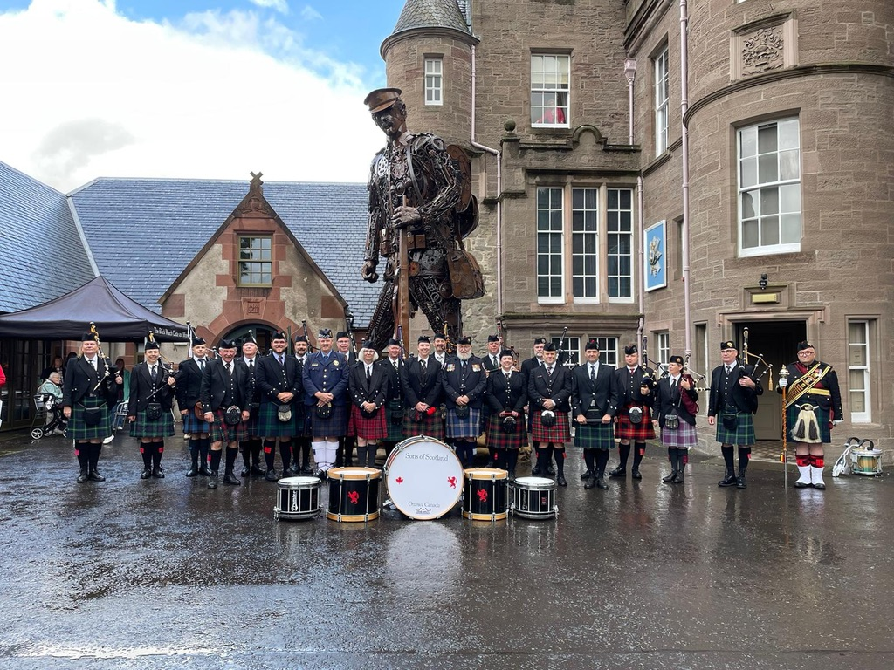
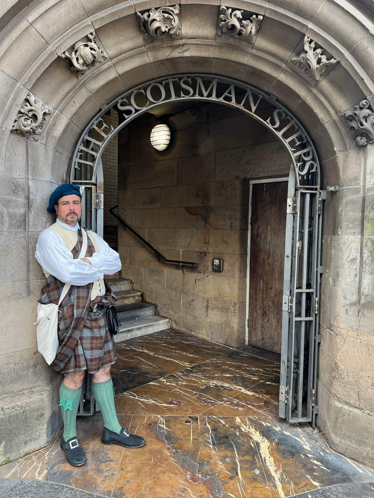

“We will never forget your part in our mother’s send off.”
Matty Taylor — Highland Bagpiper

Highland bagpipes for moments that matter
With more than twenty years of professional performance experience, I provide deeply felt music for funerals, weddings, commemorations, and celebrations across West Virginia and the Mid-Atlantic.
Every set is tailored to the tone of your gathering—whether you need a single lament to honor a loved one or a full ceremonial program in full regalia.
Standard honorarium: $300 plus travel within West Virginia. Custom quotes available for extended ceremonies, travel, or specialty attire.
Professional, respectful, and bespoke
I collaborate with families, event planners, and funeral directors to shape music that feels intentional and supportive. I’m a former Pipe Major and current officer with the West Virginia Highlanders, and I’m comfortable performing in modern or historical attire matching your ceremony.
- Funerals, memorials, and graveside services
- Weddings, anniversaries, and milestone celebrations
- Monument dedications, Highland games, and cultural festivals
- Historical reenactments with 18th/19th-century kit

Suggested tunes for solemn ceremonies
Here are popular selections for funerals and memorials. I’m happy to recommend additional airs, marches, and medleys tailored to your tradition or service branch.
- Amazing Grace*
- Going Home*
- Green Hills of Tyrol*
- When the Battle is O’er*
- The Caisson Song (Army)
- Anchors Aweigh (Navy)
- Semper Paratus (Coast Guard)
- Off We Go Into the Wild Blue Yonder (Air Force)
- The Marines’ Hymn (Marines)
- Semper Supra (Space Force)
- Simple Gifts
- Rowan Tree
- Meeting of the Waters
- West Virginia Hills
- Minstrel Boy
- Danny Boy
- Wearin’ of the Green / Rising of the Moon
- Highland Cathedral
- Lament for the Lone Piper
- Auld Lang Syne
- Hymne
- When the Pipers Play
*Frequently requested selections
Words from families & friends
“When the pipes started, the entire church gasped—you’d have thought a royal funeral was about to begin.”
“Thank you for playing at our 50th anniversary. Everyone was thrilled and the pipes made the night unforgettable.”
Serving West Virginia & beyond
Primary service areas include Clarksburg, Weston, Morgantown, Elkins, Buckhannon, and the greater Appalachian region. Travel is welcomed for high-profile events or with accommodations.
Let’s discuss how the pipes can amplify your ceremony with dignity, power, and grace.
